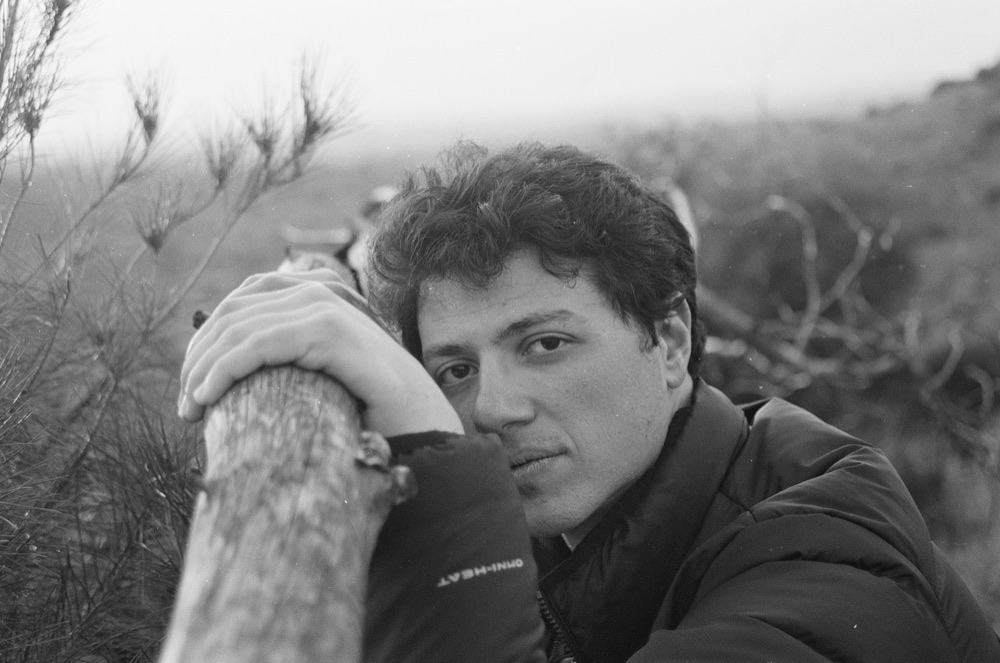
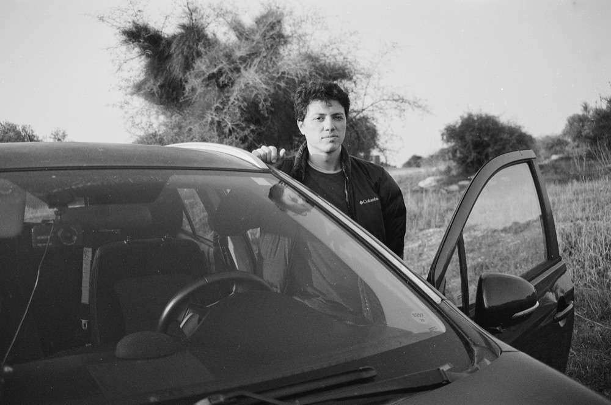
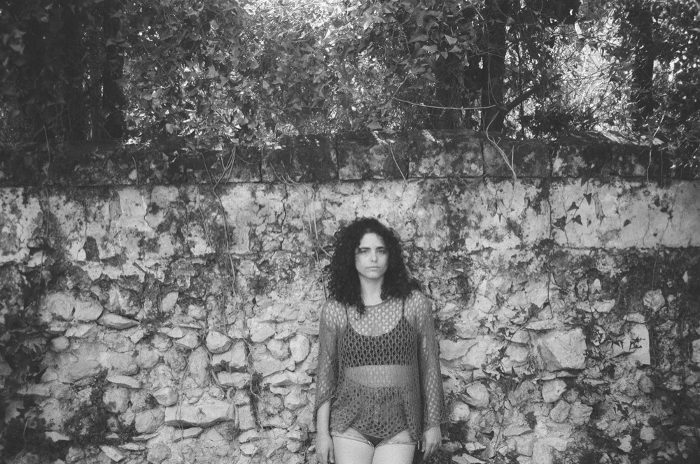
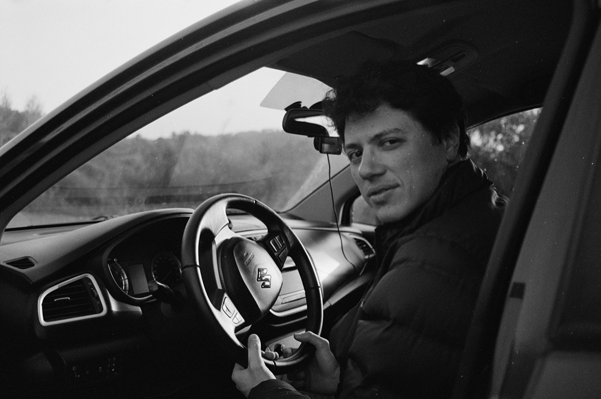
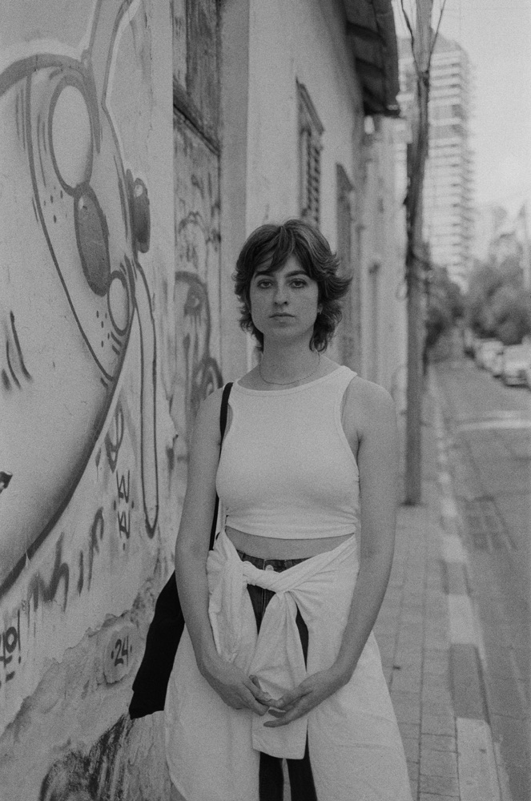
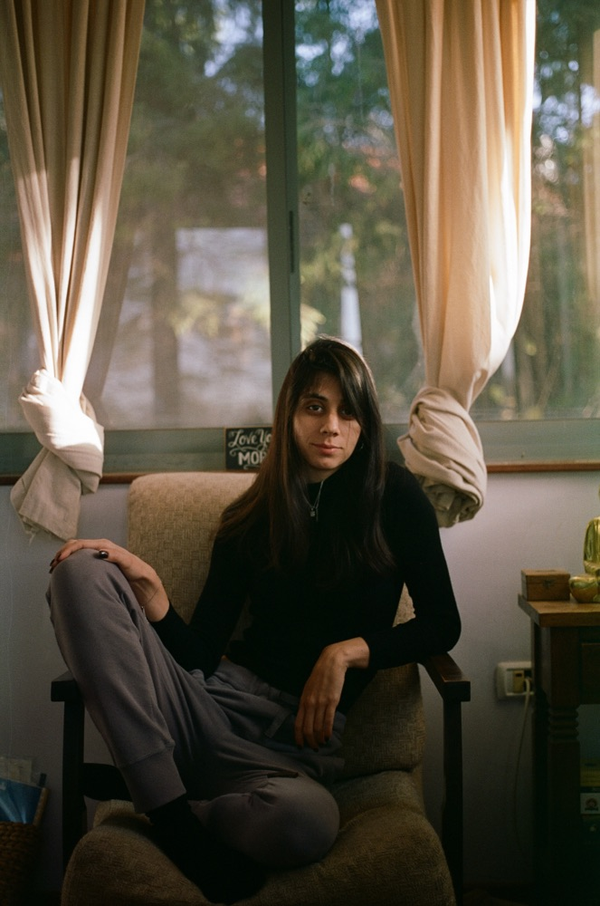
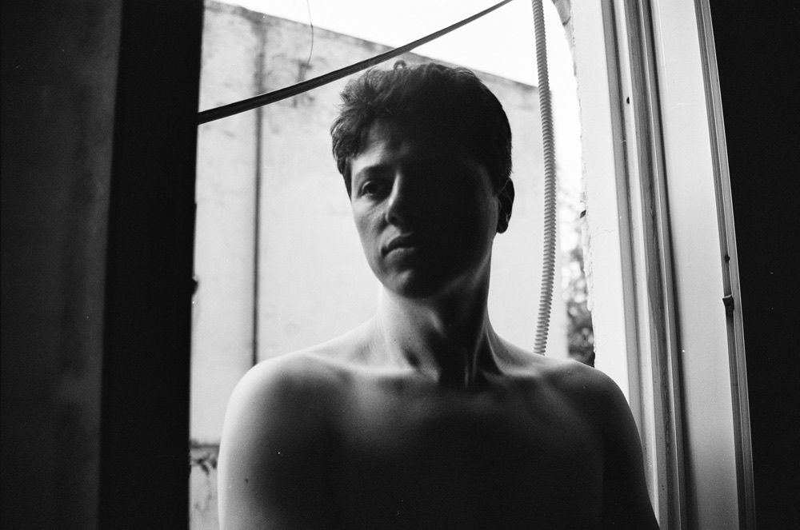
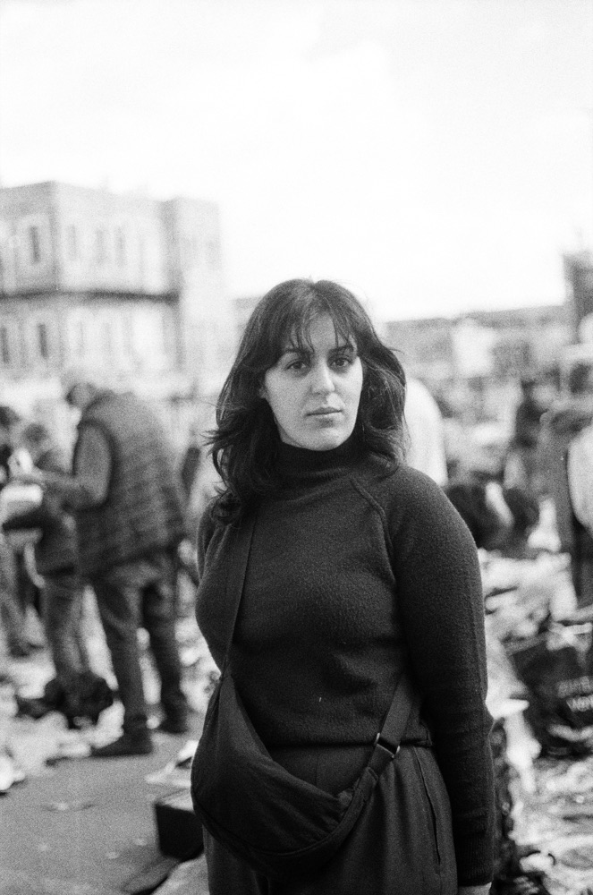
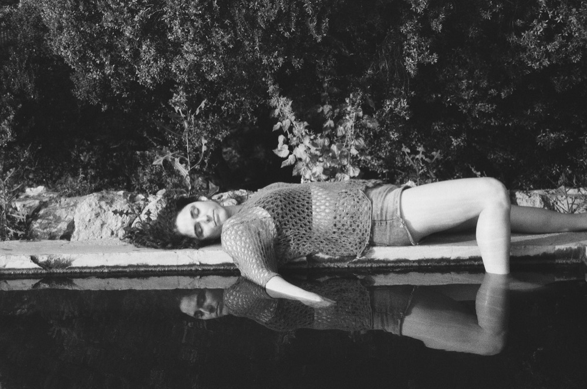
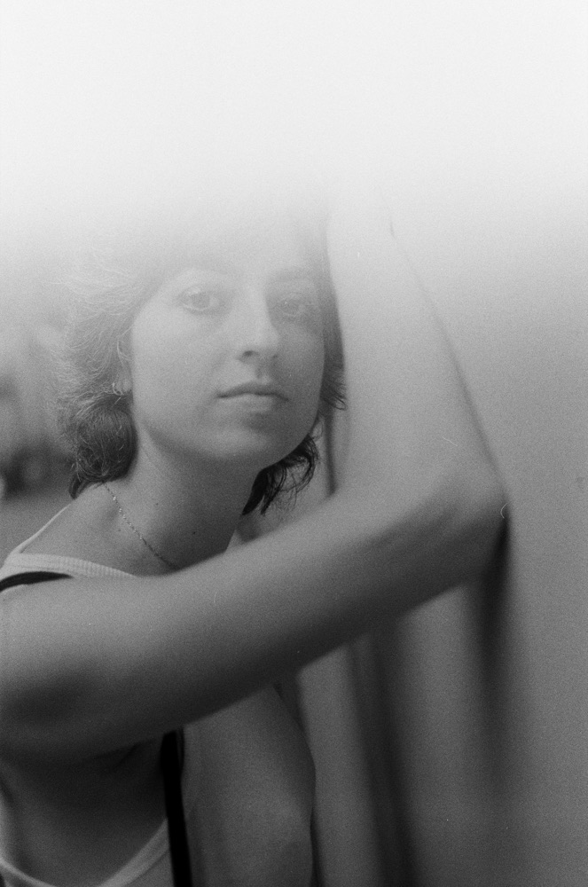

Slide 01 / 06
03 / About
Player profile
The designer behind the pixels — how I work and what I love making.
A film frame has a few seconds to show you where to look. So does a screen.
I spent years designing sets for film, always thinking about the person watching. Now I design digital products with that same focus: what they see first, what they need next, and what they’ll never notice because it just works.
I adapt to every product and its needs. Before anything else, I dive deep into its world: the people who’ll use it, the field it lives in and the feeling it should carry, both functionally and visually. The design grows from there, shaped by the product, not by my habits.
Scroll for moreOff screen / Analog
Through the lens
When I'm not pushing pixels, I'm shooting film — mostly people. A 35mm camera, a few rolls, and the slow joy of waiting to see what came out.











Fun facts / Reel 01
Fun facts about me
Pull the lever to click to the next slide.